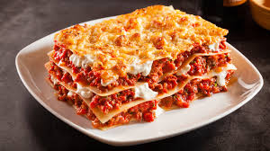

Lasagna Recipe
This classic lasagna recipe is a family favorite, featuring layers of rich meat sauce, creamy ricotta, and melted mozzarella cheese. Perfect for gatherings and special occasions!
- 9 lasagna noodles
- 1 pound ground beef
- 2 cups ricotta cheese
- 3 cups marinara sauce
- 2 cups shredded mozzarella cheese
- 1/2 cup grated Parmesan cheese
- 1 egg
- Salt and pepper to taste
Steps
- Preheat your oven to 375°F (190°C).
- Cook the lasagna noodles according to package instructions. Drain and set aside.
- In a large skillet, cook the ground beef over medium heat until browned. Drain excess fat.
- Add marinara sauce to the cooked beef and simmer for 10 minutes.
- In a bowl, mix ricotta cheese, egg, salt, and pepper.
- In a baking dish, spread a layer of meat sauce, followed by a layer of noodles, then a layer of the ricotta mixture. Repeat layers, ending with meat sauce on top.
- Sprinkle shredded mozzarella and grated Parmesan cheese over the top.
- Cover with foil and bake for 25 minutes. Remove foil and bake for an additional 25 minutes or until cheese is bubbly and golden brown.
- Let it cool for 10 minutes before serving. Enjoy!